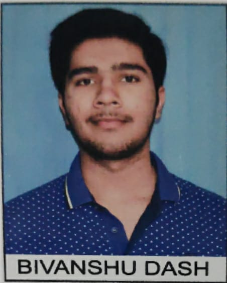

In the bustling world of academia, one name shines brightly, capturing the essence of creativity,
curiosity, and a deep-seated passion for engineering. My name is Bivanshu Dash, and I am proud to share my
story with you.
From a young age, I have embraced the label of an extrovert, relishing every opportunity to connect with
people and explore the multifaceted tapestry of life. This sociable nature has been the fuel behind my
never-ending quest for knowledge. I am an avid seeker of wisdom, and my insatiable curiosity has been my
guiding star, propelling me into the uncharted territories of innovation.
I've been fortunate to nurture what some might call a spark of genius, channeling my creative energy
into the realm of technology. This has been a remarkable journey, filled with projects and innovations
that pushed the boundaries of what I thought was possible. Every challenge I've encountered has only
served as an opportunity to let my imagination soar.
Beyond the confines of technology, I've discovered solace in the realms of literature and cinema. I am
an ardent reader of novels, diving deep into the worlds created by authors, and a connoisseur of
philosophy in the form of movies. These experiences have broadened my horizons and enriched my
perspective on life's profound questions.
My passion doesn't end there; it extends to the far reaches of the globe. I find myself captivated by
the culture and traditions of Japan, where the ancient meets the modern, and the beautiful landscapes of
Scandinavian countries, where nature's grandeur takes center stage. The diversity of our world
fascinates me, and I'm committed to understanding and appreciating its various facets.
At my core, I am a devout patriot and a proud Indian. My values of obedience and well-behaved conduct
reflect my commitment to my roots. I firmly believe in the potential for change and progress in my
homeland, and I intend to be at the forefront of that transformation.
Currently, I'm a sophomore at SRM Institute of Science and Technology, a place where my dreams are
nurtured and my talents are honed. With an open heart and an insatiable appetite for learning, I look to
the future with hope and ambition. My goal is clear: to become a renowned engineer, acknowledged and
appreciated by all, and to be a force for positive change, thriving in my mission to develop both my
country and the world.
As I continue my journey, I aim to be a source of inspiration for those who believe in the power of
creativity, the beauty of culture, and the strength of unwavering patriotism. My hope is to leave a
lasting impact, respected by many and yet, leaving none with a reason to harbor hatred. Together, we can
shape a better world.
